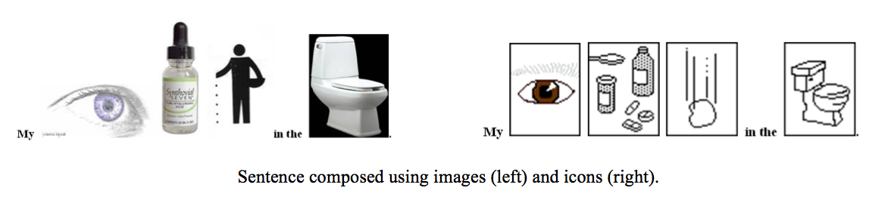

Abstract
People with aphasia, a condition that impairs the ability to understand or generate written or spoken language, are aided by assistive technology that helps them communicate through a vocabulary of icons. These systems are akin to language translation systems, translating icon arrangements into spoken or written language and vice versa. However, these icon-based systems have little vocabulary breadth or depth, making it difficult for people with aphasia to apply their usage to multiple real world situations. Pictures from the web are numerous, varied, and easily accessible and thus, could potentially address the small size issues of icon-based systems. We present results from two studies that investigate this potential and demonstrate that images can be as effective as icons when used as a replacement for English language communication. The first study uses elderly subjects to investigate the efficacy of images vs. icons in conveying word meaning; the second study examines the retention of word-level meaning by both images and icons with a population of aphasics. We conclude that images collected from the web are as functional as icons in conveying information and thus, are feasible to use in assistive technology that supports people with aphasia.
Materials
PDF |
Slides |
BibTeX